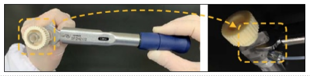
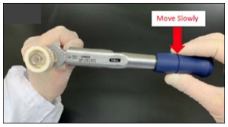
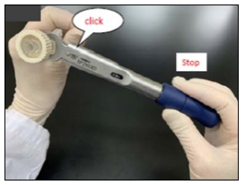

Tightening the Pump / Syringe Case
This topic includes information about how to tighten the substrate pump/syringe case.
| Table of Contents |
|---|
| Materials Required |
| Tightening the Pump / Syringe Case |
Materials Required
C37181 - Torque Wrench for Syringe
Tightening the Pump / Syringe Case
- Open the substrate loader door to access the substrate pump/syringe.
- Catch the upper position of the case head with the torque wrench.

- Slowly tighten the torque wrench in clockwise direction.

- Stop immediately when you hear or feel a click. If you tighten after the click, loosen and restart from Step 2.
